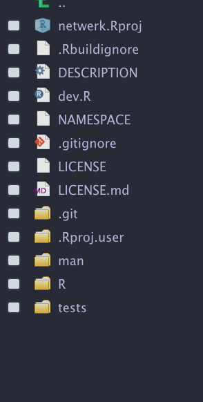

✔ Setting active project to '/Users/katherine/Documents/GitHub/bios2.github.io-quarto'
✔ Adding '^development\\.R$' to 'posts/2021-05-04-building-r-packages/.Rbuildignore'R packages! they are kind of like cookies:
Almost everyone enjoys them
delicious when homemade
Lots of storebought options available
Great skill to have
not necessary to sell them!
But most of all: cookies are delicious for what they contain: chocolate chunks, candy, oats, cocoa. However, all cookies share some fundamental ingredients and nearly identical structure. Flour, saturated with fat and sugar hydrated only with an egg, flavoured with vanilla and salt. The basic formula is invariant and admits only slight deviation – otherwise, it becomes something other than a cookie.
This workshop is devoted to the study of cookie dough.
Mise en place : development environment
We’ll explore a few useful packages in this workshop. The first two in particular are very popular tools for modern-day R package development:
install.packages("devtools")
install.packages("usethis")
install.packages("testthat")
install.packages("assertthat")Building an R package also requires specific tools for compiling the finished package. Run the following line to make sure you have the development environment:
devtools::has_devel()If you do not have the software to build R packages, you should see a message which will help you find the correct links to download what you need!
Windows will need RTools. First do the check above to see if you are already set up. If not then download the software here.
and Install. After that, open R and run the following:
writeLines('PATH="${RTOOLS40_HOME}\\usr\\bin;${PATH}"', con = "~/.Renviron")and restart R. Then run the check above once more to confirm
The structure: flour and sugar
No cookies without carbs
An R package is essentially a folder on your computer with specific structure. We will begin by creating an empty R package and taking a tour!
Open your R code editor, and find out where you are:
getwd()This is to prepare for the next step, where we will choose a location for our R package folder. Please be intentional about where you place your R package! Do not place it in the same space as another package, Rstudio project or other project. Create a new and isolated location for it.
I am working from an existing R project in my typical R Projects folder, so I go up one level:
usethis::create_package("../netwerk")
Let’s run R CMD CHECK right away. We will do this MANY TIMES.
devtools::check()We should see some warnings! let’s keep these in mind as we continue our tour.
The DESCRIPTION file
The most important file to notice is the DESCRIPTION. This gives general information about the entire package. It is written in a specific file format
Package: netwerk
Title: Werks with Networks
Version: 0.0.0.9000
Authors@R:
person(given = "Andrew",
family = "MacDonald",
role = c("aut", "cre"),
email = "<you@email.com>")
Description: it does networks.
License: MIT + file LICENSE
Encoding: UTF-8
LazyData: true
Roxygen: list(markdown = TRUE)
RoxygenNote: 7.1.1
Suggests:
testthat (>= 3.0.0)
Config/testthat/edition: 3Here are some things to edit manually in DESCRIPTION:
- package name [tk naming of R packages] – make it short and convenient if you can!
- Title: write this part In Title Case. Don’t end the title with a period.
- Description: Describe the package in a short block of text. This should end with a period.
- Authors: Add your name here and the name of anyone building the package with you.
usethiswill have done the first step for you, and filled in the structure. Only “aut” (author) and “cre” (creator) are essential. but many others are possible
Add your name here.
Add a license
usethis::use_mit_license(copyright_holder = "")note about the different roles taht R package authors can have. Funny ones. but creator and maintainer are the key ones.
Note the R folder. We’ll get much more into that later
- Rbuildignore
Keeping notes
create an R file
usethis::use_build_ignore("dev.R")the docs folder
here we have a very minimal version of an R packages we’re going to be adding to it as the course progresses.
One thing we can do right away is build and check the R package
What exactly is happining here? slide from R package tutorial.
Lots of checkpoints and progress confrimations along the way.
OK so what is that all about? we have compiled the R package and it has gone to where the R packages on our computer go.
There is a natural cycle to how the different steps in an R package workflow proceed – see the documentation for this lesson – we will be following this process (TK another pictures?
Ok so now that we ahve the basic structure, let’s talk about some content for the R package. I received the donation of a little R function already that we can use to create this workflow in a nice way
This R function (explain what the function does)
OK so let’s focus on just one part of this function.
load all – shortcut
how do we do this in VScode?
how to add something to the .Rbuildignore? it would be nice to have a little .dev script as a space to create all the ohter dependencies that are involved in making an R package.
Useful links
This workshop borrows heavily from some excellent sources:
- the R packages book especially the “Whole Game” chapter!
- rOpenSci Packages: Development, Maintenance, and Peer Review
https://builder.r-hub.io/about.html